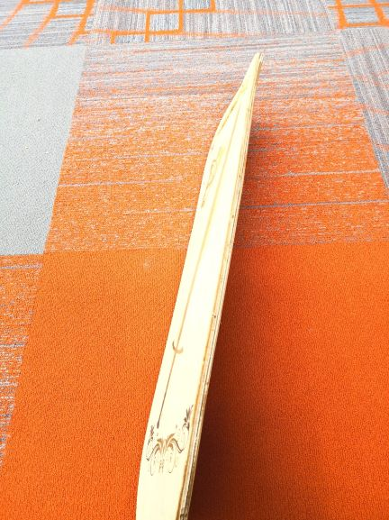
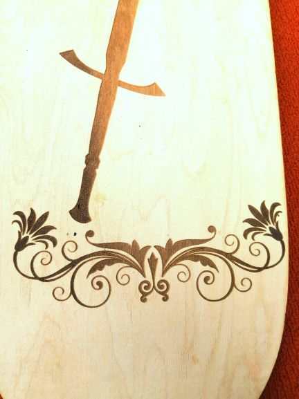

In class today, we learn the basic knowledge about electric circuit----the OHM's Law which basically means the voltage across an conductor is directly propotionally to the current through it. We also learn the symbols for resistors, LEDs, switches, capacitors and the other things of the electric circuit.



In class today, we need to make our own moulds for chocolate. We need to use wax to make the nagetive part of the mould first, so I
designed my mould in Coreldraw then I extruded in it 360 Fusion. After I got the negative part of my mould, we used the Smooth-sil 940 to make the
positive part of the mould. I poured the silicon into the mould carefully and let it cure for 24 hours. Then the next day I got the postive
mould of my mould. However, the floral scrolls of my mould are too narrow, which make my negative mould broke a little bite
after I took off my positive silicon mould from it. Next time if I have another chance to make a chocalate mould, I should choose somthing
not too compicate and make all the curves of the image I chose wider. Finally I just poured chocolate in my mould! I got a butterfly chocolate! :)